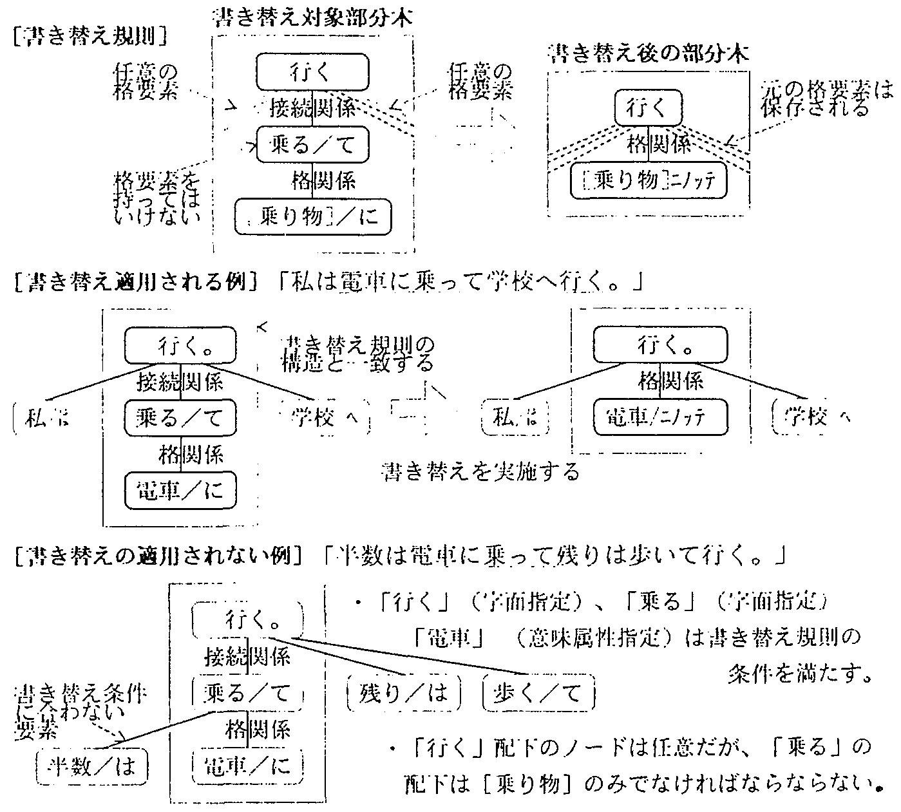
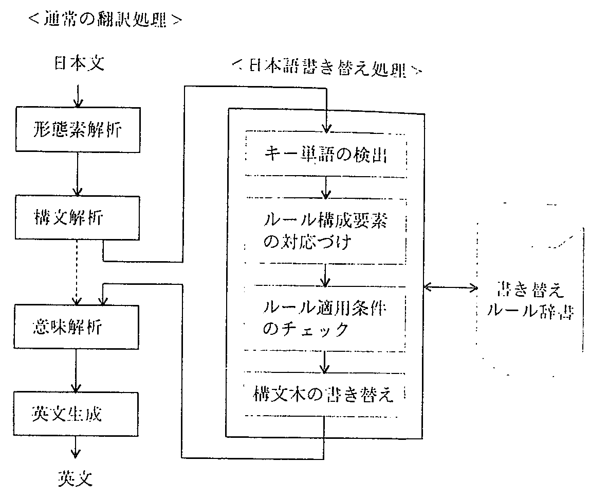
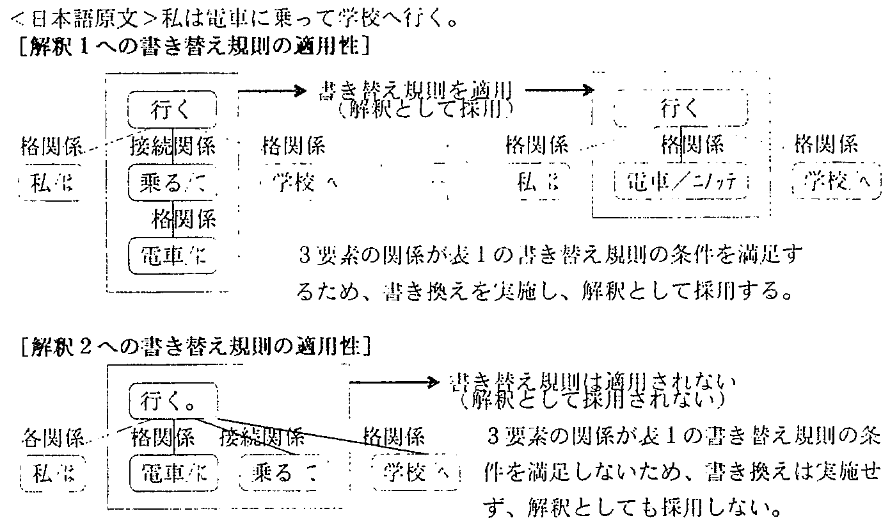
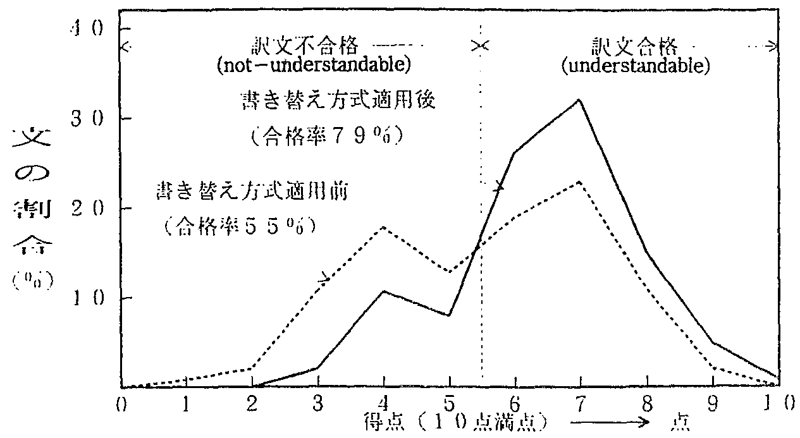
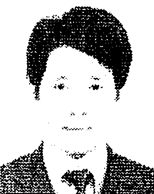
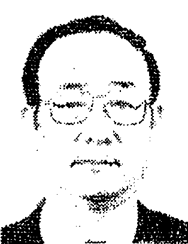

最近, 言語間の発想法の違いを克服し, 機械翻訳の品質を向上させるための方法として, 多段翻訳方式や用例翻訳方式が提案され, その効果が期待されている. また, 現在, 翻訳困難な表現や構文は, 人手による原文前編集の対象となっているが, これらの多くは, 言語間の発想の遠いを反映したものであることを考えれば, 前編集も言語間の発想の述いを克服する方法の一つであり, その自動化による訳文品質の向上が期待される. しかし, 自然言語の表現には, 同形式異内容の問題があり, 副作用の生じないよう, 前編集の内容をそのまま自動化することは困難であった. これに対して, 本論文では, (1)単語の精密な文法的属性と意味的属性を使用すれば, 原文に対する自動書き替え規則の適用条件が詳細に記述できると予想されること, (2)原文解析によって文構或要素の文法的, 意味的性質が明らかになった段階で書き替えを適用すれば, 書き替えによる予想外の副作用を排除できると期待されること, の2点に着目して, 原文自動書き替え型の翻訳方式を提案する. 新聞記事を使用した翻訳実験によれば, 自動書き替え規則の適用された箇所は102文中, 44文, 延べ52箇所であり, そのうち訳文品質が明らかに向上した文は33文であった. また, 規則の適用された文の構文意味解祈の多義の数が平均5.39/文から1.31/文まで減少した. これらの結果, 本方式は翻訳品質向上ならびに多義減少の効果の大きいことが分かった.
To Improve the quality of machine translation, it is important to develop a translation method that takes into account the conceptual differences between languages that cause difficult problems in translation. Up to now, many machine translation methods such as Multi-Level Translation method and Example Based Translation method have beeen proposed. The conceptual differences between languages typically occur with expressions that must be subjected to manual pre-editing of the source texts. Then, if difficult-to-translate expressions can be automatically pre-edited into easy-to-translate expressions, these problems will be considerably solved. But, it has been difficult because of the problem of the same structure with different meanings. This paper proposes a translation method that includes an automatic source text rewriting function based on the considerations of the following two points. First, if we can use both precise syntactic attributes and semantic attributes, applying conditions of rewriting rules can correctly be defined. Second, if rewriting rules are applied to intermediate expressions after syntactic analysis, most of undesired effect can be avoided because sufficient information for application of the rule can be obtained. This method has the advantage of being able to use existing translation functions for the translation of difficult-to-translate expressions. At the same time, it improves processing efficiency by reducing ambiguities in syntactic and semantic analysis. According to translation experiments using newspaper articles, rewriting rules were applied to 44 sentences (43%) out of a total 102 sentences (in 32 articles), an aggregate total of 52 locations. Translation quality was improved in 33 sentences (75%) of the total and there was no degradation in the remainder. Furthermore, ambiguities in the semantic analysis were reduced from an average 5.39 per sentence to 1.31 per sentencc. These results show that this simple method gives a substantial improvement in translation quality.
| 1. はじめに | |
| 2. 書き替えの対象 | |
| 2.1 自動書き替えの対象範囲 | |
| 2.2 書き替え対象表現の分類 | |
| 2.2.1 日本語内書き替え | |
| 2.2.2 疑似的日本語表現への書き替え | |
| 3. 自動書き替え方式 | |
| 4. 実験と評価 | |
| 4.1 実験と評価の条件 | |
| 4.2 実験結果と考察 | |
| 5. あとがき | |
| 謝辞 | |
| 参考文献 | |
| 付表 原文自動書き替えによる訳文変化の例 |
従来, 機械翻訳において数多くの研究開発が行われ, 翻訳業務への適用も行われるようになってきた1).
しかし, 依然として訳文の品質が問題となっており, 新しい理論や方式の提案が期待されている2).
訳文品質の向上を狙って, 最近, 多くの研究3),4)が行われているが, 言語が話者の対象に対する見方, 捉え方をも表現する手段であることを考えると, 異なる言語族間の翻訳においては, 特にこの達いを克服することが重要と 考えられる5),6).
言語間の発想の違いに着目し, もとの意味を失わないように翻訳する方法としては, 第1に, 「原文の表現や構造を分解し過ぎないよう, 目的言語内で, なるべく会体の意味に該当する表現を探して置き替える方法」, 第2に, 「システムが原文の意味を変えない範囲で翻訳しやすい表現に書き替えて 翻訳する方法」が考えられる.
第1のアプローチの例としては, 言語による話者の認識の達いに着目した 多段翻訳方式7),8)などがあげられる. この方法では話者の意志や判断を示す主休的表現と対象の姿を示す客体的表現を分離して 翻訳するが, 客体的表現に対して, 構造の持つ意味を失わないよう, 構造の抽象化のレベルを設けて, 段階的に翻訳している.
また最近, 従来の合理主義的(theoretical)なアプローチに加えて, 経験主義的(empirical)なアプローチも始められ, 知識ベース型の翻訳9)-11)や 用例翻訳12),13)等の研究が行われ, その効果が期待されている. 用例翻訳の方法は, 原文の表現をダイレクトに目的言語に対応させることを狙っており, やはり第1のアプローチの例と考えられる.
これに対して, 第2のアプローチとしては, 従来から行われている人手による前編集をあげることができる. 前編集作業を支援するため, 翻訳しやすいように言語を制限, 原文をチェックするための支援プログラムを開発する試みが 行われている14),15). また, 変換過程を日々変換, 日英変換, 英々変換で構成することにより, 言語間の達いを吸収する試みも 行われている16),17).
言語による発想の違いは, 機械翻訳しにくいところに端的に現れていると考えられるから, 従来, 人手による前編集の対象となっているような表現を 自動的な翻訳の対象とすることができれば, 訳文品質は向上すると期待できる. しかし, 前編集の自動化は, 無視できない副作用を生じるため, 実現困難であった☆. 副作用の原因は, いわゆる同形式異内容の現象のためで, 字面上は同じ表現であっても, 書き替えてよい場合と書き替えてはいけない場合, または, 意味によって書き替え方の異なる場合があり, 自動的にその区別をすることが困難であったためである. そこで, 本論文では, 書き替えの必要な現象の性質に着目し, (1)単語の詳細な文法的, 意味的属性を使用して書き替え規則の適用条件を記述ずること, (2)原文の解析が進行し, 書き替え規則の適用条件の判定に必要な情報が得られた時点で 書き替えを実行すること, の2点によって, 副作用の無視できる自動書き替えが実現できることを示す.
すなわち, 本論文では, 第1のアプローチの立場から提案されている「多段翻訳方式」の上に, 第2のアプローチの立場から, 従来前編集の対象となっているような 機械翻訳困難な表現や構文を自動的に書き替える方法を追加した 「原文自動書き替え型翻訳方式」を提案する. 具体的には, 日英機械翻訳において 原文自動書き替えの対象となる表現や構文の種類と性質を調べ, 全体を原言語内で書き換える項目と, 原言語内書き替えが困難であるため目的言語の表現に部分的に書き替えるべき項目に分け, 書き替え方式と書き替え規則形式を提案する.
この方法は, 訳文品質の向上を狙ったものであるが, 併せて, 「書き替え対象となる表現に対して, 既存の翻訳機能がそのまま利用できるため, 新たな翻訳アルゴリズムを作成しなくても良いこと」, 「一定の表現構造を固定的に捉えることにより, 構文意味解析の曖味性が減少するため, 処理速度が向上すること」などの効果18)も 期待できる☆☆. そこで, 新聞記事翻訳への適用実験結果に基づき, これらの効果をも示す.
原文自動書き替えの対象となる表現は, 以下の条件を満たす表現と考えられる.
| 条件1: | そのままでは適切な翻訳ができない. | ||
| 条件2: | 意味を変えないような書き替え方法がある. | ||
| 条件3: | その書き替えを行えば, 翻訳可能となる. | ||
| 条件4: | 既存の翻訳機能に対して, 悪い副作用を生じない. |
これらのうち, 条件1〜3は, 人手による前編集の場合と同様であるが, 条件4は異なる☆.
(1) 機械翻訳不能の原因
まず, 第1の条件について考える. 実際の文書で適切な機械翻訳ができない表現を分類すると, おおよそ以下のとおりとなる.
| (i) | 原文が間達っている. | ||
| �� | 原言語の表現の約束を守っていない. (誤字, 脱字, 構文誤り等) | ||
| �� | 表現または内容が曖昧. (解析不能) | ||
| �� | 内容が間違っている. | ||
| (ii) | 既存の翻訳技術で翻訳できる範囲であるが, 使用しているシステムでは能力が足りない. | ||
| �� | システム(辞書, 規則)のバグ. | ||
| �� | 該当する表現を翻訳する機能(アルゴリズム)がインプリメントされていない. | ||
| (iii) | 高度な意訳等が必要で現状では翻訳困難である. | ||
| �� | 原言語の表現に直接対応する目的言語の表現がないため, 話者の意図を判断して, 言い直さなければならないもの. | ||
| �� | 慣習の違いなどにより, 訳す必要のないもの. | ||
これらのうち, (i)は��を除き, 文章校正の対象範囲であり, 従来から多くの研究が行われている☆. 日英機械翻訳で問題となるのは, (ii)と(iii)である.
(2) 意味を変えない書き替え
次に, 第2の条件について考える. 人手による前編集の場合は, 原言語内に意味を変えない別の表現が存在しなければ, 書き替えはできない. これに対して, 翻訳システム内部で書き替える場合は, 原言語内に別の表現が無くても, 目的言語に適切な表現があれば, それを直接指示することで教済することができる.
そこで, 原文自動書き替えの対象を以下の2通りに分類する.
| (A) | 着目する表現に対して, 当システムで翻訳可能な別の原言語表現のある場合. | |
| (原言語内書き替え) | ||
| (B) | 別の原言語表現はないが, 部分的に対応する目的言語表現のある場合. | |
| (疑似的原言語への書き替え) |
このうちAは, 原言語内での書き替えであるため, 書き替え後の文は, 原言語の文としても意味の分かる 文となる☆が, Bの書き替えは, 目的言語固有の表現に対応づける書き替えであり, 書き替えた後の文は, 必ずしも原言語の文として意味が通じる必要はない.
(3) 書き替え後の翻訳の可否
第3の条件であるが, 書き替えた後, 翻訳可能となるか否かは, 人手による前編集の場合と同様であり, 実験的に確認する.
(4) 副作用のない書き替え
人手による原文書き替えでは, 書き替えられる文は特定されており, 他の文への副作用はない. これに対して, 自動書き替えの場合は, 登録した書き替え規則は該当する表現のすべてに適用されるため, 書き替えてはならないものまで書き替えてしまう可能性がある. 特に, 原文の段階での書き替えでは, 書き替え対象は字面表記で指定されることになるため, 字面が一致した表現はすべて書き替えられてしまう.
これらの問題を解決するには, 書き替え規則は, その適用条件を精密に記述すること, また, 書き替え規則は, それぞれの規則の適用条件が判定できる情報が得られた段階で適用することが必要である.
前者の問題は, ALT-J/E の単語意味属性を使用することによって解決できると 期待される☆☆. また, 後者の間題を解決する方法としては, 構文解析の候補が出そろった時点で, 書き替え規則を適用することとする.
既存のシステムで翻訳に失取した表現が自動書き替えの対象候補となる. 原文書き替えの規則を収集するには, 翻訳に失敗した表現に対する解析結果を追跡して失取する表現のパターンを抽出し, それに対応する翻訳可能な表現パターンを実験的に 求めればよい☆.
ここでは, 機能試験文(3,700文)と新聞記事文(500文)の翻訳実験の過程で得られた経験に基づき, 書き替えによって効果の期待できる表現の種類と書き替えの方法について 考察する☆☆.
原言語内書き替えの対象となる項目を以下の3種に分類する. ただし, 日本語内書き替えが可能であっても, 書き替えた後の表現が意味的に曖味になるものは, 直接英語を意識した疑似的日本語に書き替えることとし, この分類から外して次節に加えた.
(1) 縮約展開型の書き替え
動詞を共有する複数の文では, 前方の動詞が省略される場合が多い. 例えば, 1)では, 動詞の「担当する」だけでなく, 助詞の「を」まで省略されているため, 「米国」と「副社長」が並列に見え, 助詞「は」の認定に支障が生じる. このような場合, 格要素の対応関係を見て, 省略された述語を補完すれば, 意味解析は容易になる.
| 1) | 社長は米国, 副社長は欧州を担当する. | ||
| 1') | 社長は米国を担当し, 副社長は欧州を担当する. |
また, 動詞が並列に並べられると, 活用語尾か省略され, 見かけ上, 名詞解釈される現象が発生する. 例えば, 2)では, 動詞「追加する」の語尾「する」か省かれているため, 名詞の「追加」と解釈され, 文全体の意味解析に失敗する. このような失取を防ぐため, 活用語尾を補い2')のように原文を書き替える.
| 2) | システムが追加および削除するデータ〜 | ||
| 2') | システムが追加しそして削除するデータ〜 |
(2) 冗長除去型の書き替え
もって回った言い方など, 翻訳する必要のない表現を削除する. 例えば, 仕様書などでは, 3)のような表現が用いられる場合が多いが, 「ものである」の表現は翻訳を困難にするだけでなく, 英語としてほとんど意味をなさないから削除する.
| 3) | 既存機能を拡張することによって, システム全体の能力を高めるものである. | ||
| 3') | 既存機能を拡張することによって, システム全体の能力を高める. |
例の4)も同様である. 通常, 接続助詞「ば」は, 条件接続の意味のほか, この例のように名詞の列挙を表す場合がある. 条件接続か名詞列挙かを区別するには, 周辺の構造と意味を広く見る必要があるため, 条件接続の意味に解択しているシステムが多いと思われる. そのような場合, 例えば4)の文も内容的に同等の表現4')に書き替えれば問題は解決する.
| 4) | 男もいれば, 女もいる. | ||
| 4') | 男も女もいる. |
(3) 構文組み替え型の書き替え
日本語の構文に直接対応する英語構文がない場合, 英語に対応するよう, 日本文全体の構造を書き替えてしまうもので, 原文からは想像のつかないような英文を生成することができる. 文脈処理18)でも 省略された主語や目的語が補完できないような場合, または, 補完できたとしても適切な英文にならないような場合などに適用される.
例えば, 5)の文は, 「合わせる」, 「生産する」の主語, 目的語の双方がないため, そのままでは翻訳できない. 文脈から主語, 目的語を補完して訳す方法もあるが, 冗長な訳文になってしまう嫌いがある. そこで, 原文中のキーワード的な言葉を英語構文に対応するように組み直して, 5')の形に書き替える.
| 5) | 二機種合わせて月三百台生産する. | ||
| 5') | 二機種の合計月産は五百台だ. |
疑似的原言語への書き替え対象となる項目を以下の3種に分類する.
(1) 独立句的表現の書き替え
日本語の動詞性の副詞句には, 英語側では単純な前置詞句に訳せるにもかかわらず, 直訳すれば動詞句になり, 訳文の品質が低下するものが多い. 6)では「乗る」は動詞であるが, 「に乗って」は手段を表す“by”に対応する意味であるので, 疑似的な日本悟“ニノッテ”を設け, それに置き替える. 手段を表す“by”に相当する日本語として, 助詞「で」があるが, 「で」は多数の解析困難な多義を発生させるため使用を避け, 疑似的日本語への書き替えとする.
| 6) | 私は電車に乗って学校へ行く. | ||
| 6') | 私は電車“ニノッテ”学校へ行く. |
なお, 7)の場合も, 「に乗って」が使用されているが, この場合は本動詞であるため, 書き替えの対象にならない. そのため, 「半数は電車に乗る. 」, 「残りは歩いていく. 」と別々に解釈される. 「乗って」と「歩いて」を共に手段として解釈させるには, 既に2.2.1の(1)で示した縮約展開型の書き替えを適用した後, 本項の書き替えを適用すればよい.
| 7) | 半数は電車に乗って残りは歩いて行く. |
(2) 様相・時制表現の書き替え
様相や時制は通常, 助詞, 自動詞の組み合わせ(主体的表現)によって表現されるが, 名詞, 動詞等によって客体化された表現で表される場合がある. 例えば, 8)では名詞述語「予定だ」によって「計画の意志」が示されている. また, 10)は名詞述語「ところだ」によって, 完了直後の状態を表している. このような表現は, 8'), 10')のように客体的表現から分離し, 疑似的に主体的な表現として処理するよう書き替える.
| 8) | 山谷電気は東京に本社を移す予定だ. | ||
| 8') | 山谷電気は東京に本社を移す(+plan to 変形). | ||
| 9) | これは私が出した予定だ. | ||
| 10) | バスは出発したところだ. | ||
| 10') | バスは出発する(+完結直後状態). | ||
| 11) | 古戦場は武士が戦ったところだ. |
なお, 同じ名詞述語でも, 9)と11)は, 共に全体が「A is B」の英語構文に対応する表現であるため, 書き替えの対象とならない. この区別は以下のようにして行うことができる. すなわち, 8)〜11)の文はいずれも, 「AはBだ」の日本語構文であるが, 名詞AとBの意味的関係を見ると, 8)と10)は, AとB(「山谷電気」と「予定」および「バス」と「ところ」)が意味的につながらないが, 9)と11)は, AとB(「これ」と「予定」および「古戦場」と「ところ」)の意味が意味属性体系上, 上下関係にあるため, 書き替えは適用せず, 「A is B」の構文に訳せば良いことが分かる☆.
(3) 接続表現の書き替え
文間の接続を表す語の中には, 英語にした場合あまり意味を持たす, かえって意味不明となるような表現がある. 例えば12)では, 「のに統き」は行為の順序を示すだけであるので, 内部表現上, 接続属性として「順序接続」を付加し, 原文から削除する.
| 12) | 高機能を追加するのに続き, 改良型を導入する. | ||
| 12') | 高機能を追加する(順序接統), 改良型を導入する. |
(1) 書き替え規則の形式
書き替え規則☆の形式を 表1に示す. 本規則では, 書き替えの予期しない副作用を排除するため, 書き替え対象となる表現は, 原文中の単語の品詞, 意味属性, 字面のほか文字間の係り受け関係をも使って記述される. 例えば, 表1の規則を構文木で示すと図1の上段のとおりとなる. 書き替え側では, 「乗り物(意味属性指定)」が「乗る(字面指定)」に対して格関係にあること, 「乗る」が「行く(宇面指定)」に対して接統関係にあることが条件であるが, 同時に, 「行く」に対しては, 任意の数の要素との係り受け関係を持ってもよいが, 「乗る」に対しては, 「乗り物」以外の係り受けを持ってはならないことが示されている. これによって, 「〜に乗って〜行く」の表現でも, 図1の下の例に示すように, 書き替えてよい場合と書き替えてはならない場合が識別される.
| キー単語 | 構文木内の位置 | 書き替えの対象表現 | 書き替え後の表現 | ||||
| 構成 | 受け | 係り | 構成 | 受け | 係り | ||
| 乗る | B1 | [乗り物]+に(助詞) | 任意 | B2(格関係) | [乗り物]+“ニノッテ”(助詞相当語) | * | B3(格関係) |
| B2 | 乗る(音便)+て(助詞) | B1 | B3(接続関係) | ＜削除＞ | |||
| B3 | 行く[+*] | B2 | ＜任意＞ | ＜変更無し＞ | B1 | ＜変更無し＞ | |
|
 |
(2) 規則起動のフェーズ
翻訳処理は形態素解析, 構文解析, 意味解析などいくつかのフェーズから構成されるが, 余り早い段階での書き替えは, 解析情報が不足しているため, 規則の適用対象を精密に指定することが困難で, 2.1(4)で述べたような悪い副作用が生じやすい. 逆に, 解析が深く進行した後では, 後に述べるような解析多義削減効果が減少する恐れがある.
そこで, ここでは前述の規則の適用条件がチェック可能になる時点, すなわち, 構文解析の直後に書き替え規則を起動することとする. 図2に, 書き替え処理の位置と書き替え処理の構成を示す.
|
 |
(3) 構文多義の扱い
構文解析では, 構文上の多義は解消せず, いくつかの解析候補が残ることが多い. 従って, 同一の原文に対する解析結果でも, 書き替え規則が適用可能なものと適用不可能なものが生しることがある. その場合, 両者を比べると, 適用する知識内容の連いから, 以下の理由で, 書き替え規則の適用できる解釈候補の方が, 相対的に正しい解釈になっていることが推定される.
| �� | 構文解析では, 単語の品詞や文節の種類などの文法的知識が使用されるのに対して, 書き替え規則では(1)で述べたように, 単語の意味属性等の意味的知識などが 使用される☆. | |
| �� | 構文解析では, 文節間の関係が2項関係を基本に解析されるのに対して, 書き替え規則では, 多項関係で捉えられるため, 表現構造の持つ意味が 捉えやすい☆. |
例えば, 前節1)の例文では, 構文解析の結果は, 図3に示すような2つの解析多義を持つが, [解釈1]には表1の規則が適用できるのに対して, [解釈2]には適用できない. この場合, 適用できない解釈の方を単に削除することにより, 解釈は一意に定まる.
|
 |
第2, 3章で述べた日本文書き替え方式を, 日英機械翻訳システムALT-J/E の上にインプリメントし, 日本文自動書き替えを実施した場合としない場合について, 比較呼価を行った.
(1) 対象試験文と実装した規則数
日経産業新問の32記事のリード文102文を翻訳対象とした. 原文の文平均の文字数は40.2文字/文, 単語数は21.2単語/文である. 各記事のリード文は3〜5文から構成されており, 文脈を持っているため, 記事単位に翻訳する☆☆が, 評価は文単位に行う.
また, 書き替え規則は, 上記の試験文を含む新聞記事500文と 機能試験文(第2版3,700文)5)の翻訳実験に基づいて 作成した940規則を実装した.
(2) 訳文品質の採点基凖
訳文品質の採点基準は, ALPAC21)の9段階採点基準を 以下の観点で見直した10点満点法を使用した.
| �� | 訳文だけで原文の意味が理解できるものを6点以上とし, 合格とする. | |
| �� | 簡単な後修正で使える英語となる文を8点以上とし, 秀訳とする. |
なお, 採点は, 翻訳会社の3名の日英翻訳家がお互いに独立に行い, その平均点を四捨五入した値を訳文の得点とした.
日本文自動書き替え実験の結果を表2, 表3に示す. 試験に使用した102文に対して, 書き替え規則の適用された文は, 44文(43%)で, 延べ適用箇所は52箇所であった. 付表に, 自動書き替えを適用しない場合と適用した場合の翻訳結果の例を示す.
| 後 | 書き替え後の得点 | ||||||||||||||
| 不合格点 | 合格点 | 集計 平均4.3点 | |||||||||||||
| 前 | 点 | 0 | 1 | 2 | 3 | 4 | 5 | 6 | 7 | 8 | 9 | 10 | |||
| 書 き 替 え 前 の 得 点 |
不 合 格 点 | 0 | 35文 (80%) | ||||||||||||
| 1 | 1 | 1 | |||||||||||||
| 2 | 1 | 1 | 2 | ||||||||||||
| 3 | 4 | 1 | 2 | 5 | 1 | 13 | |||||||||
| 4 | 1 | 2 | 2 | 3 | 1 | 9 | |||||||||
| 5 | 1 | 3 | 4 | 1 | 1 | 10 | |||||||||
| 合 格 点 | 6 | 3 | 1 | 2 | 6 | 9文 (20%) | |||||||||
| 7 | 2 | 2 | |||||||||||||
| 8 | 1 | 1 | |||||||||||||
| 9 | |||||||||||||||
| 10 | |||||||||||||||
| 集計 平均6.7点 |
4 | 2 | 5 | 13 | 11 | 5 | 3 | 1 | 合計44文 | ||||||
| 11文(25%) | 33文(75%) | ||||||||||||||
| [備考] | 対象試験文は新聞記事102文(32記事)で、 文平均の文字数は40.2文宇/文(21.2単語/文)。 |
| 書き替え種別 | 番号 | 書き替えのタイプ | ルール適用箇所 | 訳文品質向上効果 | 合格文数の増加 | 訳文コンパクト効果 |
| 日本語内書き替え | 1 | 縮約展開 | 7箇所(7文) | 1.7点 | 1 → 5 | + 1.3語 |
| 2 | 冗長除去 | 2箇所(2文) | 3.5点 | 0 → 2 | - 0.9語 | |
| 3 | 構文変換 | 12箇所(11文) | 1.6点 | 3 → 5 | - 0.1語 | |
| 疑似的日本語表現の書き替え | 1 | 独立句的表現 | 21箇所(19文) | 2.3点 | 3 → 15 | - 1.6語 |
| 2 | 様相時制表現 | 7箇所(7文) | 2.0点 | 2 → 6 | - 2.3語 | |
| 3 | 接続表現 | 3箇所(3文) | 1.7点 | 1 → 3 | ±0.0語 | |
| 計又は平均 | - | ---- | 52箇所(44文) | 2.0点 | 9 → 33 | - 0.8語 |
| [備考] | (1) | 対象試験文は102文で、文平均の文字数は40.2文字/文(21.2単語/文)。 | |||
| (2) | 複数の書き替えルールの適用された文が10文あるが、 書き替え効果は、適用されたルール毎に調べて集計した。 |
以下, 規則の適用された文における訳文品質の変化 と意味解析多義の変化について考察する.
(1) 訳文品質向上効果
規則の適用された44文のうち, 33文(全体の32%) において訳文品質向上効果がみられた. 全体の訳文合 格率は55%から79%に向上した. 本方式適用前後の 得点分布を図4に示す.
|
 |
102文全体の平均点は適用前の5.7点から6.6点に向上したのに対して, 規則の適用された44文の平均点は, 適用前の4.3点から適用後は6.7点となり, 平均2点以上向上した.
特に, 書き替え前の翻訳結果が4〜5点の文の場合, その多く(15/19＝79%)が, 6点以上の合格点となった. 元の点が3点以下の文では, 書き替え対象外の誤りの影響が大きいが, それでも合格点まで向上した例(9/16＝56%)はかなりあった.
規則適用によって不合格(5点以下)から合格(6点以上)に変化した例文は24文であるが, その内訳は, 日本語内の書き替えによるもの(5文), 疑似的日本語への害き替えによるもの(18文), それらの両者によるもの(1文)であり, 疑似的日本語への書き替えの方が効果が大きい.
疑似的日本語への書き替えは, 後の英文生成処理への負担が減少し, 書き替え後の翻訳誤りの発生を防ぎやすい等の利点もある. 今後, さらに強化していきたい.
書き替え規則のタイプとその効果の関係を見ると, 独立句的表現の書き替え規則の適用例が最も多く, 訳文品質向上効果も大きい.
(2) 訳文コンパクト化の効果
訳文のコンパクト化の観点からみると, 縮約展開型書き替えでは, 必然的に訳文の単語数が増加する(平均4.3語増)が, その他の書き替えでは減少している(平均1.8語減). 全体としてみれば, 訳文の単語数の減少は, 文平均0.8語程度にとどまっており, 訳文コンパクト化の効果はあまり期待できない.
(3) 解析多義削減効果
規則が適用された44文の意味解析の多義は, 平均5.4から1.3に減少した. この現象は, 上記の訳文品質向上効果を生んでいると同時に, 意味解析処理の高速化にも役立っている.
機械翻訳の品質を向上させるための1つの方法として, (1)精密な単語意味属性を使用して書き替え規則を記述すること, (2)書き替え規則適用条件の判定可能な情報が得られる構文解析結果に規則を適用すること, によって副作用の少ない原文自動書き替え型の翻訳方式を実現した.
書き替える原文対象は, �｜緻椶垢詆集修紡个靴�, 当システムで翻訳可能な別の原言語表現のある場合(原言語内書き替え方式)と, �∧未慮狂生貮集修呂覆い�, 部分的に対応する目的言語表現のある場合(疑似的原言語への書き替え方式)の2つに分け, 合わせて6種類の自動書き替え項目を実現した.
新聞記事を使用した翻訳実験結果によれば, 書き替え規則の適用された箇所は102文中, 44文, 延べ52箇所であった. そのうち訳文品質向上効果のあった文は33文である. また, 適用された文の構文意味解析の多義の数が平均5.4/文から1.3/文まで減少した. 実験の結果, 本方式は, 翻訳品質向上, 多義解消の双方において大きな効果があることが分かった.
また, 本方式はインプリメントの観点からみても, 「翻訳困難な表現の翻訳に, 既存の翻訳機能がそのまま利用できる」点で, 大きな利点があり, 今後の訳文品質向上策として有望であると判断できる.
今後の課題としては, 節や構文全体の書き替えへの拡張が考えられる. その際, 本論文で示した疑似的日本語の表現を目的言語の表現に接近させれば, 翻訳のバイパスができ, ハイブリッド型の翻訳方式になる. また, 書き替えのクイミングの問題では, 本論文は構文解析の後の書き替えを示したが, 既に形態解析後の解析誤りを回復するための書き替えなどについても検討中であり, それらの結果については改めて報告する予定である.
おわりに, 本研究に多大のご協力を頂いている新潟大学宮崎正弘教授, 当研究所横尾昭男主任研究員, NTTアドバンステクノロジの小見佳恵課長ほか, 機械翻訳研究グループのみなさまに感謝する.
 |
白井諭 (正会員) 1955年生. 1978年大阪大学工学部通信工学科卒業. 1980年同大学院博士前期課程修了. 同年日本電信電話公社入杜. 現在, NTT コミニユケーション科学研究所主任研究員. 日英機械翻訳を中心とする自然言語処理の研究に従事. 電子情報通信学会会員. |
| 池原 悟 (正会員) 1944年生. 1967年大阪大学基礎工学部電気工学科卒業. 1969年同大学大学院修士課程修了. 同年日本電信電話公社に入社. 以来, 電気通信研究所において数式処理, トラヒイック理論, 自然言語処理の研究に従事. 現在, NTTコミュニケーション科学研究所研究グループ・リーダ(主幹研究員). 工学博士. 1982年情報処理学会論文賞, 1993年情報処理学会研究賞受賞. 電子情報通信学会, 人工知能学会, 言語処理学会各会員. |
 |
河岡 司 (正会員) 1966年大阪大学工学部通信工学科卒業. 1968年同大学院修士課程修了. 同年日本電信電話公杜に入社. 研究開発技術本部運営施策部長, 情報通信網研究所知識処理研究部長を経て, 現在, NTT コミュニケーション科学研究所所長. 工学博士. 電子情報通信学会, 人工知能学会各会員. |
| 中村 行宏 (正会員) 1944年生. 1967年京都大学工学部数理工学科卒業. 1969年同大学院修士課程修了. 同年日本電信電話公社に入杜. 同社電気通信研究所において, DIPS 論理装置の研究開発を経て, 1981年より 主に並列処理アーキテクチュアを有するプロセッサの方式設計技術の研究に従事. 現在, NTT 情報通信研究所高速通信処理研究部部長. 1992年より電気通信大学大学院情報システム学研究科客員教授を兼任, 情報処理学会論文賞(1989), 大河内記念技術賞(1992), 科学技術長官章(1994)各受賞. 著書「ULSI の効率的設計法」(共著, オーム杜), 「High Level VLSI Synthesis」(共著, Kluwer Academic Publishers)など. 電子情報通信学会, IEEE 各会員. 設計自動化研究連絡会主査. IEEE Trans. on VLSI Systems 編集委員. |
| 種別 | No | 原文 | 自動書き替えを適用 しない時の翻訳結果 |
自動書き替えを適用 した時の翻訳結果 | |
| 日本語内 書き替え |
1 | 二階にショールーム、三階に商談室、会議室、セミナー室を開設し、 事務室は四階以上になる。 | [縮約展開]
ショールームを開設し、 |
C.Ito Techno-Science Corp. will set up conference
room, a meeting room and a seminar room in the second floor to a show room and
the third floor and an office will reach the fourth and higher floors.
＜評価＝3点＞ |
C.Itoh Techno-Science Corp. will set up a show room
in the second floor and will set up conference room, a meeting room, and a
seminar room in the third floor and an office will reach the fourth and higher
floors. ＜評価＝6点＞ |
| 2 | 同社がこの二十五年間で蓄積してきた自治体向けのアプリケーションプログラムを 集大成するもの。 | [冗長除去型]
集大成するもの。→ 集大成する。 |
Sales of local governmcnt specialized system with an office computer is the
thing which the application program of the aimed at local governments that
this company has stored in these 25 years is compiled.
＜評価＝2点＞ |
It will compile the application program for the local government that this
company has stored in these 25 years.
＜評価＝7点＞ | |
| 3 | 二機種合わせて月産四百台生産する。 | [構文組み替え]
→ 二機種の合計月産は400台だ。 |
It produces Midori Denki 合わせて in 2 models in
400 units per month. ＜評価＝2点＞ |
The monthly output of 2 models is 400 units.
＜評価＝8点＞ | |
書き替え |
1 | ソフト会社、Ｎ＆Ｃソフトウエアはシステムハウスの ユニコムオートメーションと共同でパソコンを使った カラー印刷システムアトリエ・ビットを開発した。 | [独立句書き替え]
と共同で→ jointly with
を使った→ using |
N&C Software Corp., a software company, developed Atlier Bit, the system
of color printing that used a personal computer by Unicom Automation Corp.
and the synergic of a system house. ＜評価＝4点＞ |
N&C Software Corp., a software company, developed Atlier Bit, the color
printing system using a personal computer, jointly with Unicom Automation Corp.,
a system house. ＜評価＝9点＞ |
| 2 | 富山センターはソフト開発要員五十人でスタート、百五十人に増やす計画。 | → be planning to 〜 |
The Toyama Center is a start in a development staff of 50 and is a plan
increased in 150 person. ＜評価＝4点＞ |
The Toyama Center starts in a development staff of 50 and is planning to
increase the Toyama system Center to 150 people.
＜評価＝7点＞ | |
| 3 | 出版取次はもともと利益率が低いことに加えて、 出版物も需要が鈍化しているため苦しい経営を余儀なくされている。 | → not only 〜 but also 〜 |
Because it adds a puhlication agency to that a profit rate is low originally
and the demand for publication is slackening, tight management is made to be
unavoidable. ＜評価＝4点＞ |
Because not only the profit rate of a publication agency is low originally,
but also the demand for publication is slackening, tight management is made
to be unavoidable. ＜評価＝7点＞ |